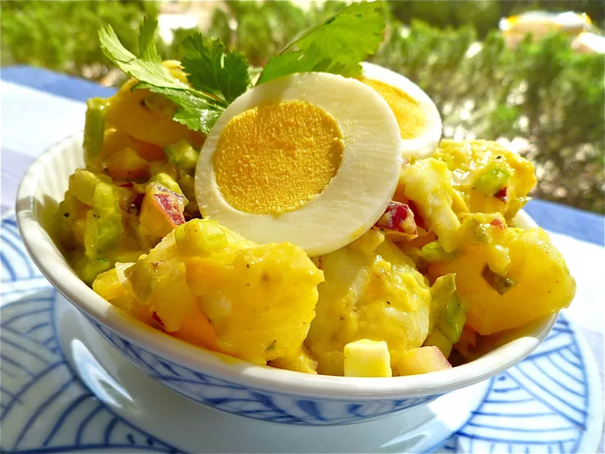

potato salad.

description.
this potato salad recipe is a true celebration of the humble potato. creamy, tangy, and bursting with fresh flavor, this salad is a delightful balance of textures and tastes. perfect for a potluck, picnic, or simply a light lunch, this potato salad is a classic comfort food, elevated.
ingredients.
- 5 medium potatoes
- 3 large eggs
- 1 cup chopped celery
- ½ cup chopped onion
- ½ cup sweet pickle relish
- ¼ cup mayonnaise
- 1 tablespoon prepared mustard
- ¼ teaspoon garlic salt
- ¼ teaspoon celery salt
- ground black pepper to taste
steps.
- gather all ingredients.
- bring a large pot of salted water to a boil. add potatoes and cook until tender but still firm, about 15 minutes.
- drain, cool, peel, and chop potatoes.
- while potatoes cook, place eggs in a saucepan and cover with cold water. bring water to a boil; cover, remove from heat, and let eggs stand in hot water for 10 to 12 minutes.
- remove from hot water, cool, peel, and chop eggs.
- combine the potatoes, eggs, celery, onion, relish, mayonnaise, mustard, garlic salt, celery salt, and pepper in a large bowl. mix together well and refrigerate until chilled